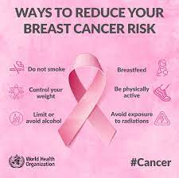

.png)
Causes of breast cancerSome factors that increase your risk of breast cancer include:1. increasing age 2. family history 3. inheritance of mutations in the genes BRCA2, BRCA1 (more common with Ashkenazi Jewish heritage) and CHEK2 4. exposure to female hormones (natural and administered) 5. starting your period before the age of 12 6. a previous breast cancer diagnosis 7. a past history of certain non-cancerous breast conditions. Lifestyle factors that can also slightly increase the risk of breast cancer in men and women include:1. being overweight 2. not enough physical activity 3. drinking alcohol |
 |
Breast cancer prevention and symptomsAn estimated 30% of breast cancer cases are attributed to modifiable risk factors, understand what you can do to reduce your breast cancer risk. Reduce your risk of breast cancer by making better behavioural choices which include:1. maintaining a healthy weight 2. staying physically active 3. avoiding harmful use of alcohol 4. breastfeeding 5. quitting tobacco use and avoiding exposure to tobacco smoke 6. avoiding the prolonged use of hormones 7. avoiding excessive exposure to radiation |